IPN - Unidad Profesional Interdisciplinaria de Ingeniería Ciencias Sociales y Administrativas
Diseño y Evaluación de Estaciones de Trabajo
Departamento: Competencias Integrales e Institucionales
Academia: Laboratorio de Ingeniería de Métodos

Práctica 1: Impacto de la Productividad en la Industria
Objetivo
Determinar la productividad del trabajo de una empresa productora de bienes durante el año más reciente, con el fin de detectar factores que la afectan, y en consecuencia proponer mejoras.
Marco Teórico
Definiciones Clave
- Productividad: Es la relación entre la producción obtenida y los recursos utilizados para obtenerla (Cociente: Producción / Insumos).
- Producción: Cantidad de productos o servicios generados en un tiempo determinado.
- Insumo: Recursos utilizados de manera directa e indirecta para la obtención de la producción.
Regla general: "Mayor producción con mismos insumos implica mejora" o "Menor número de insumos para la misma producción implica mejora".
Los Insumos Importantes Son:
Fórmulas Generales
Productividad Parcial = Producción Total / Insumos Determinados
Productividad del Trabajo (Mano de Obra)
Es el enfoque principal de esta práctica. La unidad de medida para el insumo es "Horas-Hombre".
Cálculo de Horas-Hombre (HH):
HH = (Número de trabajadores) × (Número de días trabajados) × (Horas promedio por día)
Caso Práctico: Empresa "Y", Producto "X"
Se presentan los datos del periodo Enero-Diciembre para el cálculo de productividad.
| Mes | Producción (Piezas) | Trabajadores (Personas) | Días Hábiles (Días) | Jornada (Horas/Día) |
|---|---|---|---|---|
| Enero | 21,000 | 12 | 21 | 8 |
| Febrero | 19,000 | 11 | 19 | 8 |
| Marzo | 22,000 | 12 | 22 | 8 |
| Abril | 19,000 | 11 | 19 | 8 |
| Mayo | 22,000 | 12 | 22 | 8 |
| Junio | 22,000 | 12 | 22 | 8 |
| Julio | 21,000 | 10 | 21 | 8 |
| Agosto | 23,000 | 10 | 23 | 8 |
| Septiembre | 21,000 | 12 | 21 | 8 |
| Octubre | 21,000 | 12 | 21 | 8 |
| Noviembre | 20,000 | 12 | 20 | 8 |
| Diciembre | 20,000 | 10 | 20 | 8 |
En un escenario real se calculan las horas promedio. Ejemplo: Si se trabajan 40 horas (Lunes-Viernes) y 6 horas (Sábado), el total es 46 horas/semana. El promedio diario sería: 46 horas / 6 días = 7.6 horas/día.
*Para fines de este caso práctico, utilizaremos 8 horas fijas diarias.*
Desarrollo de Cálculos
1. Cálculo de Horas Hombre (HH)
Fórmula: HH = Trabajadores × Días × Horas
- Enero: 12 trabajadores × 21 días × 8 horas = 2,016 horas
- Febrero: 11 trabajadores × 19 días × 8 horas = 1,672 horas
- Marzo: 12 trabajadores × 22 días × 8 horas = 2,112 horas
- Abril: 11 trabajadores × 19 días × 8 horas = 1,672 horas
- Mayo: 12 trabajadores × 22 días × 8 horas = 2,112 horas
- Junio: 12 trabajadores × 22 días × 8 horas = 2,112 horas
- Julio: 10 trabajadores × 21 días × 8 horas = 1,680 horas
- Agosto: 10 trabajadores × 23 días × 8 horas = 1,840 horas
- Septiembre: 12 trabajadores × 21 días × 8 horas = 2,016 horas
- Octubre: 12 trabajadores × 21 días × 8 horas = 2,016 horas
- Noviembre: 12 trabajadores × 20 días × 8 horas = 1,920 horas
- Diciembre: 10 trabajadores × 20 días × 8 horas = 1,600 horas
2. Cálculo de Productividad Parcial del Trabajo (PPT)
Fórmula: PPT = Producción / HH
- Enero: 21,000 piezas / 2,016 horas = 10.41 piezas/hora
- Febrero: 19,000 piezas / 1,672 horas = 11.36 piezas/hora
- Marzo: 22,000 piezas / 2,112 horas = 10.41 piezas/hora
- Abril: 19,000 piezas / 1,672 horas = 11.36 piezas/hora
- Mayo: 22,000 piezas / 2,112 horas = 10.41 piezas/hora
- Junio: 22,000 piezas / 2,112 horas = 10.41 piezas/hora
- Julio: 21,000 piezas / 1,680 horas = 12.50 piezas/hora
- Agosto: 23,000 piezas / 1,840 horas = 12.50 piezas/hora
- Septiembre: 21,000 piezas / 2,016 horas = 10.41 piezas/hora
- Octubre: 21,000 piezas / 2,016 horas = 10.41 piezas/hora
- Noviembre: 20,000 piezas / 1,920 horas = 10.41 piezas/hora
- Diciembre: 20,000 piezas / 1,600 horas = 12.50 piezas/hora
3. Cálculo de Productividad en Porcentaje (%)
Fórmula: PPT% = PPT × 100%
- Grupo A (10.41): 10.41 piezas/hora × 100% = 1041%
(Meses: Ene, Mar, May, Jun, Sep, Oct, Nov) - Grupo B (11.36): 11.36 piezas/hora × 100% = 1136%
(Meses: Feb, Abr) - Grupo C (12.50): 12.50 piezas/hora × 100% = 1250%
(Meses: Jul, Ago, Dic)
4. Cálculos Semestrales y Anuales
Primer Semestre:
(Sumatoria PPT Ene a Jun) / 6 meses
64.36 piezas/hora / 6 meses = 10.72 piezas/hora (1072%)
Segundo Semestre:
(Sumatoria PPT Jul a Dic) / 6 meses
68.73 piezas/hora / 6 meses = 11.455 piezas/hora (1145%)
Anual:
(Sumatoria PPT Ene a Dic) / 12 meses
133.09 piezas/hora / 12 meses = 11.09 piezas/hora (1109%)
Resultados Gráficos y Análisis
GRÁFICA DE PRODUCTIVIDAD PARCIAL DEL TRABAJO MENSUAL EN LA FABRICACIÓN DEL PRODUCTO "X" EN LA EMPRESA "Y" DURANTE EL PERIODO ENERO-DICIEMBRE 20XX
GRÁFICA DE PRODUCTIVIDAD PARCIAL DEL TRABAJO SEMESTRAL Y ANUAL EN LA FABRICACIÓN DEL PRODUCTO "X" EN LA EMPRESA "Y" DURANTE EL PERIODO ENERO-DICIEMBRE 20XX
Estructura del Análisis Requerido
Debes elaborar el análisis siguiendo esta estructura piramidal:
- Base: Análisis por cada mes (redactar un párrafo descriptivo por cada mes).
- Medio: Análisis del primer y segundo semestre (un párrafo comparativo por semestre).
- Cima: Análisis anual, comparando globalmente los dos semestres.
Descripción de Pasos a Seguir
- 1Seleccionar Empresa: Elegir una empresa para obtener la información necesaria.
- 2Obtener Datos: En tabla de productividad, obtener por mes y año: producción (piezas), N° trabajadores (personas), días laborados y relación horas trabajadas.
- 3Cálculos: Presentar cálculos de horas hombre (HH) por mes, productividad en piezas/hora y en porcentaje (%).
- 4Gráficas y Análisis: Presentar gráfica y análisis mensual, semestral y anual.
- 5Conclusiones: Elaborar y presentar mínimo 1 cuartilla de conclusiones.
Contenido del Reporte de la Práctica 1
- Carátula, objetivo y tabla de evaluación.
- Dibujo, Reflexión y Acertijo.
- Tabla de Productividad (Datos).
- Cálculo de HH y Productividad mensual, semestral y anual en %.
- Gráficas mensual, semestral y anual en %.
- Análisis por mes, semestral y anual.
- Conclusiones (mínimo 1 cuartilla).
Práctica 2: Análisis del Trabajo Manual
Elemento Asociado: Ingeniería de Métodos y Estudio de Movimientos.
🎯 Objetivo
Describir en forma resumida un proceso de ensamble e identificar aquellas actividades que puedan mejorarse, tomando en cuenta el principio de la Economía de Movimientos.
Marco Teórico Breve
1. Estudio del Trabajo
Son las técnicas (Estudio de Métodos y Medición del Trabajo) utilizadas para examinar la labor humana en todos sus contextos, investigando sistemáticamente los factores que influyen en la eficiencia para efectuar mejoras.
Estudio de Métodos (idear métodos sencillos) + Medición del Trabajo (determinar tiempos) = Mayor Productividad.
2. Procedimiento Básico (Ciclo de Mejora)
El estudio del trabajo sigue un ciclo de mejora continua:
- SELECCIONAR el trabajo o proceso a estudiar.
- REGISTRAR los datos por observación directa.
- EXAMINAR críticamente (cuestionarse lo que se hace).
- IDEAR el nuevo método.
- MEDIR el rendimiento.
- DEFINIR el estándar.
- IMPLANTAR el cambio.
- MANTENER en uso y mejorar.
3. Seguridad y Señalética
Es vital considerar el Equipo de Protección Personal (EPP) básico (Casco, Lentes, etc.). Así mismo, respetar estrictamente el código de colores:
| Color | Significado | Ejemplos de Aplicación |
|---|---|---|
| 🔴 Rojo | Paro, Prohibido, Incendios | Botones de emergencia, extintores, señales de "No Fumar". |
| 🟡 Amarillo | Advertencia, Delimitación | Bordes de escalones, zonas de riesgo, delimitación de pasillos. |
| 🟢 Verde | Condición Segura | Rutas de evacuación, botiquín de primeros auxilios, regaderas de emergencia. |
| 🔵 Azul | Obligación | Uso obligatorio de EPP (Gogles, casco, guantes), realizar acciones específicas. |
Materiales y Herramientas
- Producto de ensamble seleccionado (ej. chapa, motor pequeño, regulador, válvula).
- Herramientas necesarias para el desarmado/armado (desarmadores, llaves, etc.).
- Cronómetro (para validar el tiempo de ciclo).
- Formatos de análisis de proceso.
- Equipo de seguridad básico.
Procedimiento Paso a Paso
Sigue estrictamente estos pasos:
-
1Selección del Producto: Seleccionar un producto de ensamble (chapa, motor, regulador, etc.) y validarlo con el profesor.
-
2Validación de Tiempo: Desarmarlo y al armarlo tomar el tiempo; si se tardan de 2 a 3 minutos es el producto ideal para el cronometraje.
-
3Diagramación: Desarrollar el Diagrama del Área (disposición de piezas y herramientas) y el Diagrama Explosivo (orden de piezas).
-
4Descripción del Armado: Hacer la descripción del armado en tres niveles:
- Como "Receta de Cocina" (Texto corrido).
- Por Pasos Numerados.
- Por Pasos Numerados Sintéticos.
-
5Análisis Crítico: Realizar el análisis en el formato de proceso de ensamble (Método Actual vs. Propuesta), cuestionando: ¿Qué voy a hacer? ¿Se puede eliminar o reducir? ¿Cómo se va a mejorar?
-
6Propuesta de Mejora: Presentar el método mejorado con observaciones, recomendaciones y diseño de dispositivos si es necesario (ej. dispositivos para sostener piezas o llegada de material por gravedad).
Ejemplo Resuelto: Válvula de Globo
A continuación se muestra cómo se debe documentar el proceso de ensamble utilizando el ejemplo de la "Válvula de Globo".
A. DIAGRAMA EXPLOSIVO DEL PROCESO DE ENSAMBLE DE LA VÁLVULA DE GLOBO
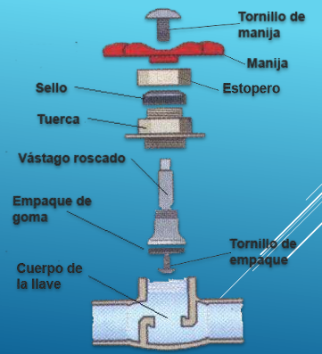B. DIAGRAMA DEL ÁREA DEL PROCESO DE ENSAMBLE DE LA VÁLVULA DE GLOBO
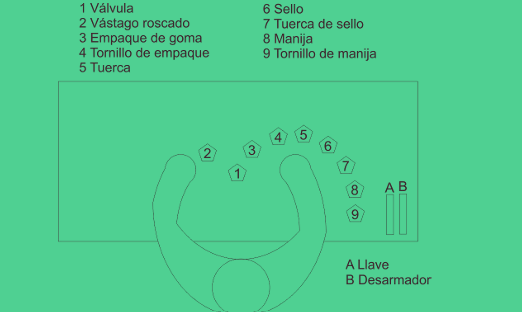C. Niveles de Descripción del Ensamble
1. Receta de Cocina (Narrativa):
"Sostenemos el vástago con la mano izquierda, con la mano derecha se pone el empaque en la parte inferior del vástago, se coloca el tornillo y se fija. Con la mano izquierda se toma la válvula, con la derecha se introduce el vástago..."
2. Pasos Numerados (Detallado):
- Se coloca el empaque en la parte inferior del vástago.
- Se coloca atornillando y fija el tornillo inferior.
- Se introduce el vástago en la válvula.
- Posteriormente se coloca la tuerca y se fija utilizando la llave.
- Se coloca el sello sobre la tuerca.
- Se coloca la otra tuerca y se fija utilizando la llave.
- Se coloca la manija o mango en el vástago.
- Se coloca al último la rondana y la tuerca se atornilla.
3. Pasos Numerados Sintéticos (Resumido):
- Colocar empaque en parte inferior de vástago.
- Colocar y fijar tornillo inferior.
- Introducir vástago en válvula.
- Colocar tuerca y fijar.
- Colocar sello.
- Colocar tuerca y fijar.
- Colocar manija o mango.
- Colocar rondana y tornillo.
Ejercicio Propuesto
Para practicar la redacción de procesos "Sintéticos", realizaremos un ejercicio rápido. No mires la solución hasta intentarlo.
✏️ Tarea: Ensamble de un Bolígrafo Retráctil
Imagina que tienes desarmado un bolígrafo con las siguientes partes: (1) Cuerpo inferior, (2) Resorte, (3) Repuesto de tinta, (4) Mecanismo de clic, (5) Cuerpo superior.
Instrucción: Escribe los "Pasos Numerados Sintéticos" (máximo 4-5 palabras por paso) para armarlo.
...Intenta escribirlo en tu cuaderno antes de leer abajo...
- Insertar resorte en repuesto.
- Introducir repuesto en cuerpo inferior.
- Colocar mecanismo en cuerpo superior.
- Unir y roscar ambos cuerpos.
- Verificar funcionamiento.
Contenido del Reporte
El reporte final debe incluir los siguientes elementos obligatorios:
- Carátula y Objetivo.
- Dibujo, Reflexión y Acertijo.
- Diagrama del Área (Actual).
- Diagrama Explosivo.
- Descripción "Receta de Cocina".
- Descripción "Pasos Numerados".
- Descripción "Pasos Sintéticos".
- Análisis en Formato (Hoja indicada).
- Diagrama del Área Propuesto (Mejorado).
- Presentar/Describir Estación Ideal.
- Conclusiones.
🧠 Reflexión Final
El análisis del trabajo manual no busca hacer trabajar "más rápido" al operario, sino trabajar de manera más inteligente. Al simplificar movimientos (pasos sintéticos), mejorar el área de trabajo (diagrama del área) y usar dispositivos de sujeción, reducimos la fatiga y aumentamos la productividad naturalmente.
Práctica 3: Diagrama Sinóptico o de Procesos de Operación
Elemento Asociado: Análisis de Métodos y Diagramas de Proceso.
🎯 Objetivo
Analizar la secuencia de las operaciones e inspecciones en el ensamble de un producto mediante el cursograma sinóptico, con el fin de conocer las principales operaciones e inspecciones de un proceso para su posterior análisis.
Marco Teórico Breve
1. Definición
El Cursograma Sinóptico es una técnica de registro que describe un proceso o método de trabajo, utilizando únicamente dos símbolos: operación e inspección.
2. Simbología Utilizada
| Símbolo | Nombre | Descripción |
|---|---|---|
| Operación | Actividades donde se modifica física o químicamente la materia prima, componentes o piezas. | |
| Inspección | Actividades de verificación, medición, revisión o comparación de calidad/cantidad. |
3. Reglas de Elaboración
- Línea Vertical: Indica el flujo o secuencia del proceso.
- Línea Horizontal: Indica la entrada de materiales o componentes.
- Pieza Principal: Se coloca en el extremo derecho del diagrama. Los demás componentes entran por la izquierda.
Selección de la Pieza Principal
Para iniciar el diagrama, es crucial identificar cuál es la pieza base o principal. Se utilizan los siguientes criterios de justificación:
- 1La que tiene la función principal.
- 2En la que se ensambla la mayor cantidad de componentes.
- 3La más grande.
- 4La más pesada.
- 5La más cara.
Procedimiento Paso a Paso
Sigue esta metodología para realizar la práctica:
-
1Desarmado: Desarmar el producto e identificar las partes a fabricar y a comprar.
-
2Selección: Seleccionar y justificar cuál es la pieza principal.
-
3Diagrama Actual: Desarrollar el diagrama sinóptico actual, iniciando por la pieza principal y siguiendo con el orden de los demás componentes.
-
4Descripción de Fabricación: Describir primero la fabricación de cada componente indicando todas sus operaciones e inspecciones.
-
5Descripción de Ensamble: Continuar con la descripción del ensamble indicando los componentes comprados hasta obtener el producto terminado.
-
6Numeración: Numerar las operaciones y después las inspecciones, empezando por la pieza principal (independientes entre sí).
-
7Análisis Crítico: Analizar una por una las operaciones e inspecciones realizando propuestas de mejora (Eliminar, Combinar, Cambiar, Simplificar).
-
8Diagrama Propuesto: Desarrollar el diagrama sinóptico mejorado correspondiente.
Ejemplo Resuelto: Ensamble de Llave de Agua
Caso: Producto "X" de la Empresa "Y"
1. Componentes Identificados
Pieza Principal: Cuerpo de la Llave (Cobre). Componentes secundarios: Vástago roscado, Tuerca, Estopero, Llave, Tuerca llave.
2. Diagrama Sinóptico Actual del producto "x" de la empresa "y"
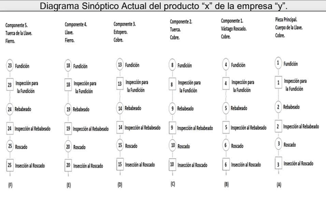 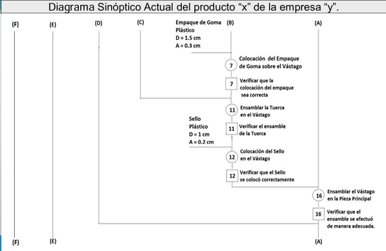 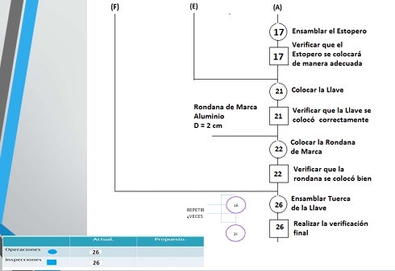3. HOJA DE ANÁLISIS PARA EL ENSAMBLE DEL PRODUCTO "x" DE LA EMPRESA "y".
Se utiliza un formato tabular para cuestionar cada paso actual y proponer mejoras. Ejemplo extractado:
| Paso Actual | Análisis (Problema) | Propuesta (Solución) | Acción |
|---|---|---|---|
| Operación: Fundición | El proceso actual genera muchas rebabas por moldes viejos. | Hacer moldes nuevos y dar mantenimiento periódico. | MEJORAR |
| Operación: Rebabeado | Se realiza para quitar excesos de material. | Al mejorar la fundición con nuevos moldes, esta operación ya no es necesaria. | ELIMINAR |
| Inspección: Del Rebabeado | Verifica la operación anterior. | Si se elimina el rebabeado, la inspección también desaparece. | ELIMINAR |
4. DIAGRAMA SINÓPTICO PROPUESTO DEL PRODUCTO "X" DE LA EMPRESA "Y"

5. Cuadro Resumen Comparativo
Al finalizar, se debe comparar el método actual contra el propuesto para evidenciar la mejora:
| Actividad | Método Actual | Método Propuesto |
|---|---|---|
| Operaciones (🔵) | 26 | 19 |
| Inspecciones (◻️) | 26 | 10 |
| Total | 52 | 29 |
¡Se logró una reducción significativa de pasos!
Contenido del Reporte
Para tu práctica, deberás entregar los siguientes puntos:
- 📄 Carátula y Objetivo.
- 🧩 Dibujo, Reflexión y Acertijo.
- ✅ Justificación de Pieza Principal.
- 📉 Diagrama Sinóptico Actual.
- 📋 Análisis utilizando formato.
- 📈 Diagrama Sinóptico Propuesto.
- 🧠 Conclusiones.
🧠 Reflexión de Aprendizaje
El Diagrama Sinóptico es la "foto panorámica" del proceso. Nos permite ver de un vistazo cómo se unen los componentes y dónde están los puntos críticos de control (inspecciones). Al analizarlo, no buscamos trabajar más rápido, sino eliminar lo que no agrega valor (como los retrabajos o inspecciones excesivas provocadas por mala calidad).
Práctica 4: Cursograma Analítico o de Flujo del Proceso
Elemento Asociado: Análisis detallado de procesos, tiempos y distancias.
🎯 Objetivo
Describir detalladamente por medio de la técnica del cursograma analítico, el proceso de ensamble y desarmado de un producto o aparato (un ciclo), con el fin de evidenciar oportunidades de mejora y preparar un método que facilite la tarea al operador, minimice costos y tiempos del proceso para incrementar la productividad.
Marco Teórico Breve
1. Definición
El Cursograma Analítico es una técnica de registro que describe un proceso o método de trabajo en donde se utilizan cinco símbolos. Esta herramienta se puede realizar de tres maneras (se aplica a tres bases):
- Al Operario: Diagrama de lo que hace la persona.
- Al Material: Diagrama de cómo se manipula o traslada el material o producto.
- A la Maquinaria/Equipo: Diagrama del uso y funcionamiento del equipo.
2. Simbología Utilizada (Norma ASME)
| Símbolo | Nombre | Descripción y Ejemplos |
|---|---|---|
| Operación | Representa actividades donde se modifica física o químicamente la materia prima, componente o producto. Ejemplos: Barnizar, Cortar, Atornillar. |
|
| Inspección | Describe actividades de revisión, análisis, verificación, medición o comparación de estándares. | |
➡ |
Transporte | Indica el movimiento de los trabajadores, materiales o equipo de un lugar a otro. |
| Demora | Indica una demora en el desarrollo de los hechos (espera de elevador, material detenido en piso). | |
| Almacenamiento | Indica el depósito de un objeto bajo vigilancia en un almacén (Materia Prima, Producto Terminado). |
Procedimiento Paso a Paso
Metodología para el desarrollo de la práctica:
-
1Inicio del Diagrama Actual: Desarrollar el diagrama analítico actual, iniciando por el último componente del diagrama sinóptico.
-
2Descripción de Fabricación: Describir primero la fabricación de cada componente indicando su nombre, y registrando todos los almacenes, transportes, operaciones, demoras e inspecciones involucrados.
-
3Descripción del Ensamble: Continuar describiendo el ensamble, indicando la obtención de los componentes y el orden de armado hasta lograr el producto terminado.
-
4Numeración: Numerar cada renglón en forma consecutiva empezando por la fabricación de los componentes y finalizando con el ensamble.
-
5Análisis Crítico: Utilizar la Hoja de Análisis para cuestionar una por una las actividades del proceso actual y generar propuestas de mejora.
-
6Diagrama Propuesto: Desarrollar el diagrama analítico propuesto (mejorado), eliminando o modificando las actividades según el análisis previo.
Diagrama analítico actual de operaciones, fabricación y ensamble de "llave de agua"
A continuación se presenta el registro detallado del método actual de trabajo:


Tabla de análisis para la fabricación y ensamble de la pieza "x"
Utilizando el método de interrogatorio, se evalúan las actividades para proponer mejoras:
| Actividad (¿Qué se hace?) | Símbolo | Análisis (¿Por qué? / ¿Cómo?) | Propuesta (Idea de mejora) | Acción |
|---|---|---|---|---|
| Traer material de almacén lejano | ➡ | El operario pierde 15 minutos caminando al almacén central. | Tener un stock de material a pie de máquina (Gravedad). | COMBINAR |
| Limar rebabas de fundición | 🔵 | Se realiza porque el molde está desgastado. | Reparar el molde para evitar rebabas excesivas. | ELIMINAR |
| Inspección de rebabeado | ◻️ | Verificar si se quitó la rebaba. | Si se elimina la operación anterior, esta inspección desaparece. | ELIMINAR |
| Esperar montacargas | D | Hay pocos montacargas disponibles. | Usar banda transportadora o patín manual disponible. | CAMBIAR |
Tabla de analisis del proceso de ensable de "llave de agua"
Se presentan las hojas de análisis detalladas correspondientes a la etapa de ensamble:


Diagrama Analítico Propuesto del proceso de ensamble de "llave de agua"
Como resultado del análisis y las acciones de mejora, se propone el siguiente método optimizado:


Contenido del Reporte
El entregable final debe incluir obligatoriamente las siguientes secciones:
- 📄 Carátula y Objetivo.
- 📊 Tabla de Evaluación.
- 📉 Cursograma Analítico Actual.
- 📋 Hoja de Análisis (Justificación).
- 📝 Resumen de la clase/teoría.
- 📈 Cursograma Analítico Propuesto.
- 🧠 Conclusiones y Bibliografía.
🧠 Reflexión de Aprendizaje
El Cursograma Analítico permite visualizar no solo qué se hace, sino cuánto cuesta en términos de recursos (tiempo y distancia). Al identificar transportes largos y demoras innecesarias, el ingeniero puede rediseñar el método para aumentar la eficiencia y reducir la fatiga del operario.
Práctica 5: Cursograma de Recorrido
Elemento Asociado: Distribución de planta, análisis de trayectorias y flujo de materiales.
🎯 Objetivo
Comprender la importancia del diagrama de recorrido como medio de registro de los hechos y complemento del cursograma analítico para el análisis del proceso. Como apoyo de los recorridos, se busca proponer una nueva alternativa de distribución de planta (Layout) que permita disminuir distancias, eliminar retrocesos y aumentar la productividad.
Marco Teórico
1. Definición del Cursograma de Recorrido
Es una técnica de registro que describe un proceso o método de trabajo en donde se utilizan cinco símbolos (Operación, Inspección, Demora, Transporte y Almacenamiento).
2. Simbología (Norma ASME)
Los símbolos se colocan directamente sobre el plano en el lugar donde ocurre la acción:
| Símbolo | Nombre | Aplicación en el Diagrama de Recorrido |
|---|---|---|
| Operación | Se coloca en el sitio (máquina, mesa, estación) donde se transforma el material. | |
| Inspección | Se coloca en el punto de control de calidad o verificación. | |
➡ |
Transporte | Se representa mediante una línea continua que une dos puntos de actividad. La flecha indica el sentido del flujo. |
| Demora | Se ubica en el lugar donde el flujo se detiene momentáneamente. | |
| Almacenamiento | Se ubica en bodegas, racks o zonas de resguardo definidas. |
Procedimiento Paso a Paso
Metodología para desarrollar el diagrama de recorrido:
-
1Obtener el Plano (Layout): Conseguir o dibujar el plano de la distribución actual de la planta hecho a escala.
-
2Trazar el Recorrido Actual: Sobre el plano, dibujar líneas que sigan la trayectoria exacta del operario, material o equipo.
-
3Identificar Actividades: Colocar los símbolos correspondientes sobre el plano en el lugar geográfico exacto donde ocurren.
-
4Numeración Secuencial: Numerar los símbolos siguiendo el orden del proceso.
-
5Análisis Conjunto: Comparar el diagrama visual con el Cursograma Analítico para detectar distancias excesivas.
-
6Propuesta de Mejora: Elaborar un Diagrama de Recorrido Propuesto rediseñando la distribución de planta (mover máquinas, abrir puertas, cambiar almacenes) para "limpiar" el flujo y acortar las líneas.
Diagrama de Recorrido
Para poder realizar el diagrama de recorrido debemos tener la distribución de la planta, esta es: la distribución de las áreas donde se realizan las operaciones para la realización de cierto producto.
Cálculo de la Escala:
La distribución de planta debe ser a escala. Para determinar la escala que sea más favorable para nosotros debemos dividir la dimensión original entre la dimensión del plano.
En este caso usaremos de ejemplo las medidas para desarrollo de la práctica:
Medida original del tráiler: 12 metros (1200 cm)
Medida en la distribución de planta (dibujo): 6 cm
Cálculo:
Escala = 1200 cm / 6 cm = 200
Resultado: Escala 1:200
Esto quiere decir que por cada 1 cm que dibujemos, representará 200 cm de nuestro plano original.
También es necesario indicar la acotación que usaremos para nuestro plano, esto es las unidades de medida que deseemos utilizar (cm, m, pulg., Lb, etc.).
Ejemplo
1. Elementos Generales de la Distribución de Planta
Para cualquier layout, debemos identificar las zonas clave:
- Zonas de Recepción y Embarque.
- Almacenes de Materia Prima y Producto Terminado.
- Áreas de Operación y Maquinaria.
- Oficinas Administrativas y Servicios.
2. DIAGRAMA DE RECORRIDO ACTUAL DEL PROCESO DE FABRICACIÓN Y ENSAMBLE DEL PRODUCTO X
Se traza el movimiento actual que evidencia ineficiencias, cruces y retrocesos.
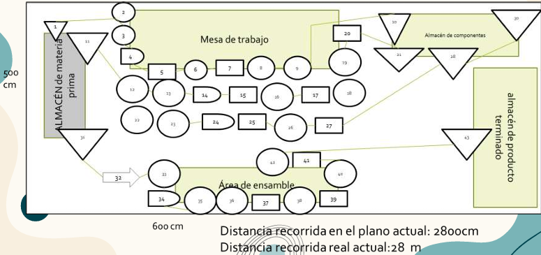3. Análisis
Desglose detallado de los puntos críticos encontrados en el recorrido actual:
 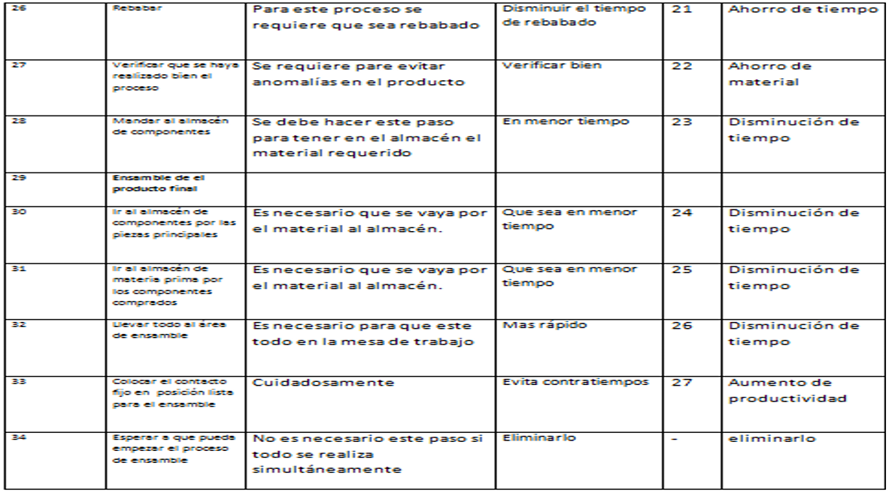
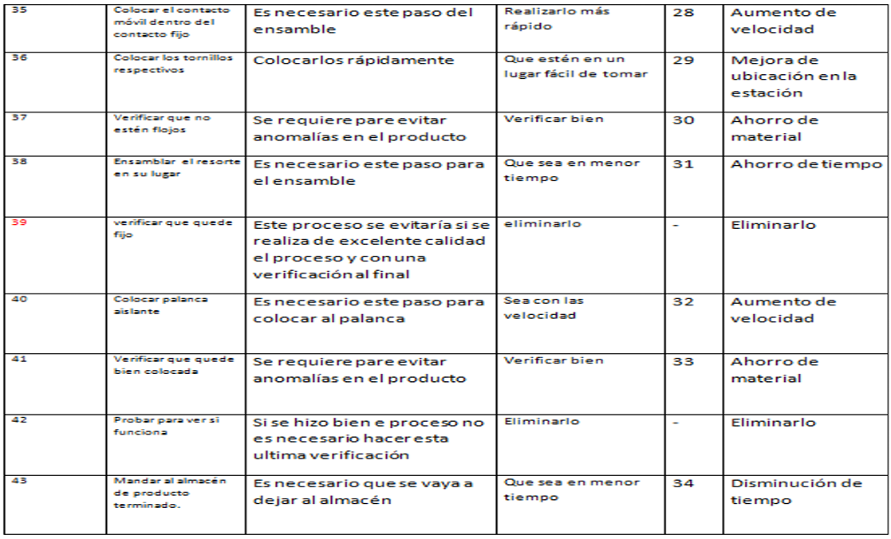
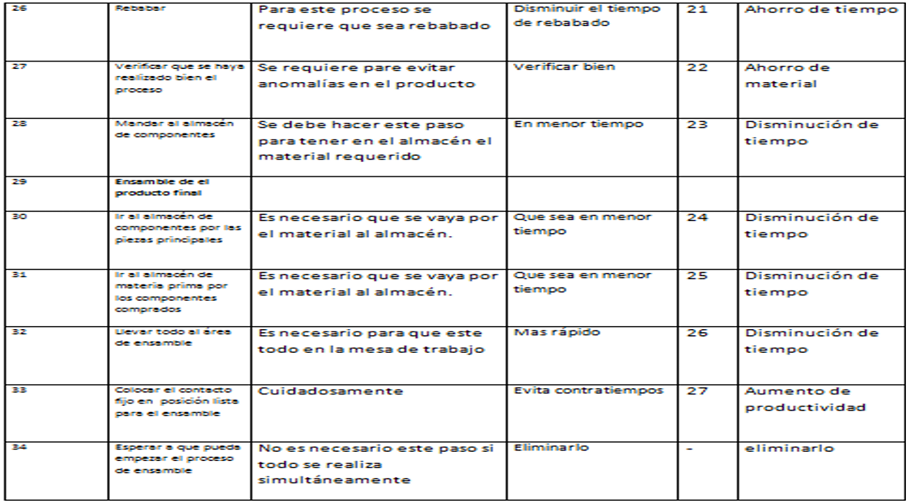
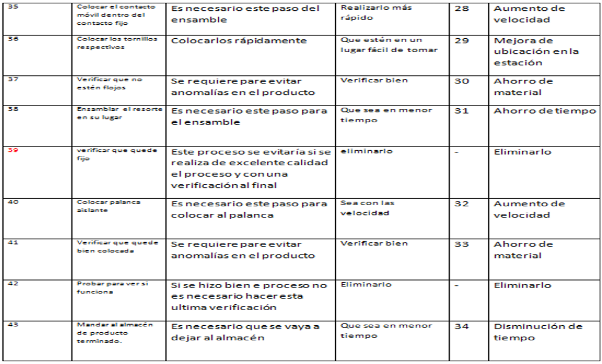
4. DIAGRAMA DE RECORRIDO PROPUESTO DEL PROCESO DE FABRICACIÓN Y ENSAMBLE DEL PRODUCTO X
Se presenta la nueva distribución con flujos optimizados.
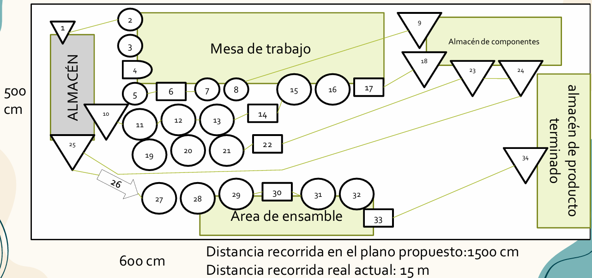Análisis de Economía (Ahorro en Distancia)
Primero determinamos la distancia recorrida en el plano actual (DRPA, DRPP) y en el plano propuesto, al igual determinamos la distancia real actual y propuesta (DRRA, DRRP).
Ahorro = DRRA - DRRP (ó DRPA - DRPP)
Cálculo:
2800 cm - 1500 cm = 1300 cm
Nos ahorramos 1300 cm de recorrido.
Cálculo de Eficiencia
Para cuantificar la mejora porcentual del nuevo método:
(DRPP / DRPA) × 100%
(1500 cm / 2800 cm) × 100% = 53%
Paso 2: Mejora de Eficiencia
100% - Relación
100% - 53% = 47%
El nuevo método es 47% más eficiente para realizar las actividades.
DESCRIPCIÓN DEL DESARROLLO DE LA PRÁCTICA 5
- Seguir la descripción de actividades que realiza un operador de tráiler (chofer) dentro de una estación de carga (a cada equipo el profesor le asignará distinto número de tráiler).
- Elaborar el correspondiente diagrama analítico y de recorrido (método actual y propuesto) en base al operador (colocar título completo).
DESCRIPCIÓN DE LAS ACTIVIDADES DE PREPARACIÓN QUE REALIZA UN OPERADOR DE TRÁILER DENTRO DE UNA ESTACIÓN DE CARGA
-
1Anotar el recorrido de actividades a partir de que registra su hora de entrada (el reloj checador está ubicado en la oficina, ver croquis).
-
2Del reloj checador se dirige hacia el vehículo que les corresponda, para revisarle a 18 neumáticos la presión de aire con un medidor manual. El tráiler mide 12 metros de largo por 2.50 metros de ancho (tomar las distancias del croquis que está hecho a escala).
-
3Detecta que a 3 neumáticos les falta aire, por lo tanto se desplaza hacia el taller de reparación, toma la manguera de la compresora, abre la válvula y va a ponerle aire a los neumáticos, cerciorándose que sean las libras de presión adecuadas.
Nota: En el tráiler número 7 se marca con asteriscos la distancia entre los ejes de los neumáticos.
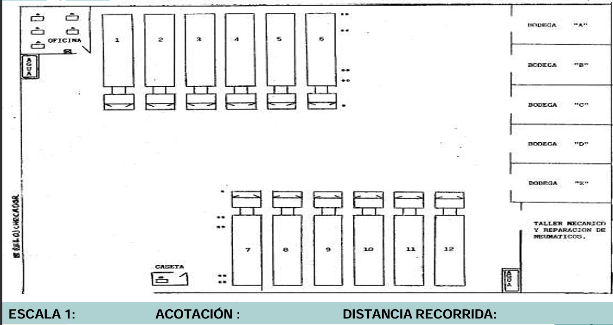Contenido del Reporte
El reporte final debe estructurarse obligatoriamente de la siguiente manera:
- Carátula, Objetivo y Tabla de Evaluación
- Dibujo, Reflexión y Acertijo
- Diagrama Analítico Actual
- Diagrama de Recorrido actual
- Análisis
- Diagrama Analítico Propuesto
- Diagrama de Recorrido Propuesto
- Conclusiones
Práctica 6: Cursograma Bimanual o Diagrama de Mano Izquierda y Mano Derecha
Elemento Asociado: Estudio de micromovimientos y economía de movimientos.
🎯 Objetivo
Identificar los elementos improductivos (Therbligs ineficientes) de una operación específica mediante el cursograma bimanual, con el fin de equilibrar los movimientos de ambas manos y reducir la fatiga y el tiempo de ciclo del operario.
Marco Teórico
1. Definición
El Cursograma Bimanual es una herramienta de registro que muestra todos los movimientos y retrasos realizados por la mano izquierda y la mano derecha, y las relaciones entre ellas. Sirve para identificar patrones de movimiento ineficientes y violaciones a los principios de economía de movimientos.
2. Los Therbligs (Micromovimientos)
Son los movimientos fundamentales en los que se puede dividir cualquier tarea manual. A continuación se presentan los Therbligs utilizados:
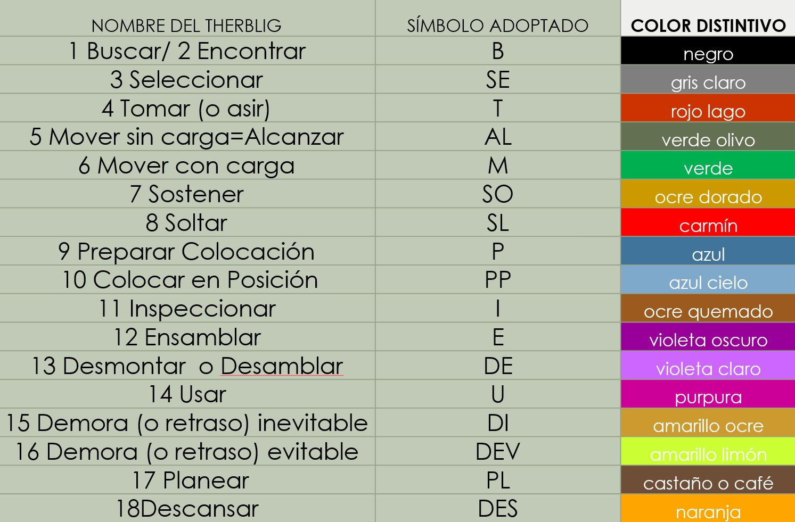Descripción de los Therbligs
Procedimiento Paso a Paso
Metodología para desarrollar la práctica:
-
1Selección de la Operación: De todas las operaciones del diagrama analítico, seleccionar la más larga, repetitiva o crítica (ej. un ensamble complejo). Justificar la elección.
-
2Diagrama Bimanual Actual: Desarrollar el diagrama registrando los micromovimientos de la mano izquierda y derecha tal como se realizan actualmente (sin dispositivos de ayuda). No omitir ningún Therblig.
-
3Numeración: Numerar cada renglón en forma consecutiva tanto para la mano izquierda como para la derecha.
-
4Análisis Crítico: Analizar cada actividad. Marcar con una "I" (Izquierda) o "D" (Derecha) las ineficiencias detectadas, especialmente el Therblig "Sostener", que indica que una mano está siendo usada como tornillo de banco.
-
5Propuesta de Mejora (Dispositivo): Diseñar un dispositivo (fixture) o plantilla que permita sujetar la pieza, liberando las manos para trabajar simultáneamente.
-
6Diagrama Bimanual Propuesto: Desarrollar el nuevo diagrama aplicando principios de economía de movimientos y el uso del dispositivo diseñado.
Ejemplo: Ensamble de Plumón
1. DIAGRAMA BIMANUAL ACTUAL (ENSAMBLE DE UN PLUMON)
Registro de los movimientos desequilibrados del método original.
2. Análisis
Identificación de movimientos ineficientes que deben eliminarse:

3. Diseño del Dispositivo (Fixture)
Boceto del dispositivo propuesto para sujetar el cuerpo del plumón.
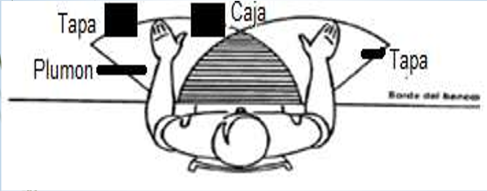4. DIAGRAMA BIMANUAL PROPUESTO (MEJORADO)
Nuevo método utilizando el dispositivo y movimientos simétricos.
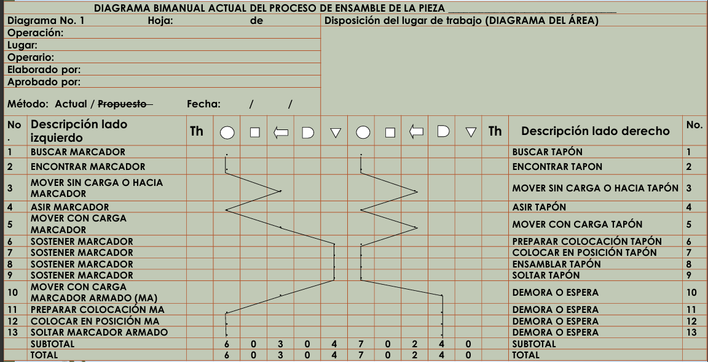Cálculo de Productividad
Comparación del número de Therbligs (movimientos) entre ambos métodos.
Movimientos Actuales (Totales): 96
Movimientos Propuestos (Totales): 26
Reducción = 96 - 26 = 70 movimientos ahorrados
Contenido del Reporte
El reporte final de la Práctica 6 debe incluir:
- Carátula, Objetivo y Tabla de Evaluación
- Dibujo, Reflexión y Acertijo
- Cursograma Bimanual Actual
- Justificación de la Operación Seleccionada
- Análisis de Therbligs (Tabla)
- Diseño del Dispositivo (Dibujo)
- Cursograma Bimanual Propuesto
- Conclusiones y Bibliografía
Práctica 7: Antropometría
Elemento Asociado: Diseño de estaciones de trabajo, herramientas y equipo basado en dimensiones humanas.
🎯 Objetivo
Aplicar conceptos de probabilidad y estadística a un conjunto de datos de un parámetro antropométrico para determinar los elementos necesarios para el diseño de maquinaria, herramienta y equipo de trabajo.
Marco Teórico
1. Ergonomía y Antropometría
La Ergonomía es la disciplina científica relacionada con la comprensión de las interacciones entre los humanos y otros elementos de un sistema, buscando optimizar el bienestar humano y el rendimiento global.
La Antropometría es una técnica estadística que analiza las dimensiones corporales o medidas del cuerpo humano con el fin de establecer estándares y diseñar ropa, herramientas, mobiliario, etc..
2. Disciplinas de Apoyo
- 🧠 Psicología: Estudio de la conducta y experiencia humana para adaptarse al medio.
- 📐 Diseño: Concepción original de un objeto u obra destinados a la producción.
- 🦴 Anatomía: Estudio de la estructura, ubicación y clasificación del cuerpo humano.
- 🧬 Fisiología: Estudio de las funciones orgánicas de los seres vivos.
3. ¿Para qué medir?
Adaptar la vestimenta, el mobiliario, herramental, equipo, maquinaria y el entorno industrial a las dimensiones de nuestro cuerpo ayudando a la seguridad.

4. ¿Qué podemos medir?
- Puntos óseos
- Anchuras
- Pliegues
- Alcances
- Estaturas
- Peso
- Perímetros
Procedimiento Paso a Paso
Metodología para el desarrollo del análisis antropométrico:
-
1Definición: Decidir la parte del cuerpo a realizar el análisis antropométrico.
-
2Diseño de Formato: Crear un registro con columnas para: Número, Nombre, Edad, Ocupación, Sexo, Datos desordenados (mm) y Datos ordenados (mm).
-
3Toma de Medidas: Realizar la toma de la medida (cota) a 50 personas (edad 20-50 años).
-
4Ordenamiento: Ordenar los datos recabados de menor a mayor.
-
5Cálculos Estadísticos: Calcular el Rango, Número de Intervalos (N) y Tamaño del Intervalo.
-
6Tabla de Análisis: Generar la tabla de frecuencias con límites, frecuencia relativa, frecuencia acumulada y marca de clase.
-
7Gráficas: Realizar el Histograma, Polígono de Frecuencias y Ojiva.
-
8Determinación de Estándares: Definir los parámetros antropométricos para los grupos: Enanos (I), Normales (II y III) y Gigantes (IV).
-
9Cálculo de Equipo: Determinar la cantidad de equipo de protección requerido para una población hipotética (ej. 200 trabajadores) basado en los estándares obtenidos.
Ejemplo: Análisis Elemento FG (Mano)
Elemento a Medir (FG): Longitud de la mano a partir de la muñeca hasta la punta del dedo medio.
Con el fin de estimar estándares de las dimensiones de la mano de una muestra de trabajadores.
1. DATOS PARA EL ANÁLISIS ANTROPOMÉTRICO DE LA PUNTA DEL DEDO MEDIO A LA BASE DE LA MUÑECA (ELEMENTO FG)
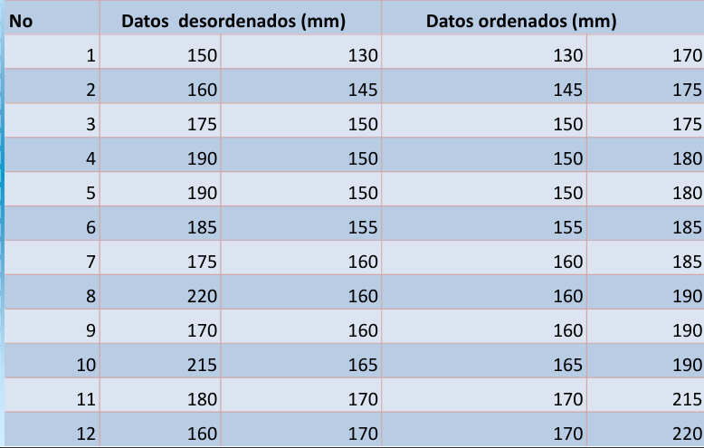2. Cálculos Iniciales
Número de Intervalos (N): √24 = 4.89 ≈ 5 intervalos.
Rango (R): Datomax - Datomin = 220 - 130 = 90 mm.
Tamaño de Intervalo (C): R / N = 90 / 5 = 18 mm.
Marca de Clase = (limite superior + limite inferior) / 2
3. TABLA DE ANÁLISIS ANTROPOMÉTRICOS DEL ELEMENTO (FG)
Cálculos Estadísticos
DESVIACIÓN ESTÁNDAR
σ = 20.74 mm
VARIANZA
σ2 = 430.52 mm2
MEDIA
x̄ = 171.66 mm
4. Gráficas
ESTÁNDARES DEL ANÁLISIS DEL MUESTREO
| CATEGORÍA | CÁLCULO / MEDIDA | NÚMERO DE TRABAJADORES |
|---|---|---|
| ENANOS I | 139 mm = 139 mm | 2 |
| NORMAL II y III | 158 mm = 158 mm | 8 |
| GIGANTES IV | (177 mm + 196 mm + 215 mm) / 3 = 196 mm | 14 |
| TOTAL: | 24 | |
CÁLCULO A 100 TRABAJADORES
Regla de 3: 100 trabajadores es a X, como 24 trabajadores es a (cantidad de muestra).
Enanos:
100 trabajadores = 24 trabajadores
X = 2 trabajadores
X = 8.33 trabajadores.
Por lo tanto son 8 trabajadores enanos, comprar 8 pares de guantes de 139 mm de largo.
Normales:
100 trabajadores = 24 trabajadores
X = 8 trabajadores
X = 33.33 trabajadores.
Por lo tanto son 33 trabajadores normales, comprar 33 pares de guantes de 158 mm de largo.
Gigantes:
100 trabajadores = 24 trabajadores
X = 14 trabajadores
X = 58.33 trabajadores.
Por lo tanto son 59 trabajadores gigantes, ya que es en donde hay mayor cantidad de personas que tienen la mano más grande. Comprar 59 pares de guantes de 196 mm de largo.
Contenido del Reporte
El reporte final de la Práctica 7 debe incluir obligatoriamente:
- Carátula, Objetivo y Tabla de Evaluación
- Dibujo, reflexión y acertijo
- Descripción Gráfica
- Cálculos estadísticos
- Tabla de Análisis
- Gráficas (Histograma, Polígono, Ojiva)
- Descripción Escrita
- Tabla de Medidas (50 personas)
- Cálculos de estándares
- Cálculo a 200 Personas
- Conclusiones
🧠 Reflexión de Aprendizaje
La antropometría permite diseñar estaciones de trabajo más cómodas y eficientes. Al adaptar el medio ambiente, herramientas y mobiliario a las características físicas del trabajador, se mejora el rendimiento y la seguridad, demostrando la importancia multidisciplinaria de la ergonomía.
Práctica 8: 5'S y Condiciones y Medio Ambiente de Trabajo
Elemento Asociado: Higiene, seguridad industrial y organización del puesto de trabajo.
🎯 Objetivo
Conocer los equipos de medición de condiciones ambientales así como los agentes físicos que afectan a una persona en su ámbito laboral y plantear las condiciones óptimas de trabajo que deberían prevalecer en un centro productivo para la integridad física, mental y emocional del trabajador en base a las actividades realizadas.
Marco Teórico: Las 5'S
Es una técnica japonesa de gestión que cuenta con 5 principios simples para lograr una mayor productividad y un mejor lugar de trabajo.
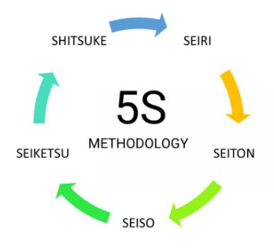| Japonés | Español | Concepto / Objetivo |
|---|---|---|
| SEIRI | ORGANIZAR | Separar innecesarios. Eliminar del espacio de trabajo lo que no sea útil. |
| SEITON | ORDENAR | Situar necesarios. Organizar el espacio de trabajo de forma eficaz ("Un lugar para cada cosa"). |
| SEISO | LIMPIAR | Suprimir suciedad. Mejorar el nivel de limpieza de los lugares. |
| SEIKETSU | ESTANDARIZAR | Señalizar anomalías. Prevenir la aparición de la suciedad y el desorden. |
| SHITSUKE | MANTENER | Seguir mejorando. Fomentar los esfuerzos en este sentido (Disciplina). |
Los beneficios que aportan las 5´s
1. TRABAJO EN EQUIPO
- Los trabajadores se comprometen.
- Se valoran sus aportaciones y conocimiento.
- La mejora continua se hace una tarea de todos.
2. MAYOR PRODUCTIVIDAD
- Menor nivel de existencias o inventarios.
- Menos accidentes.
- Menos movimientos y traslados inútiles.
3. MEJOR LUGAR DE TRABAJO
- Más espacio.
- Mayor compromiso y responsabilidad en las tareas.
- Mayor conocimiento del puesto.
¿QUÉ SON LAS CONDICIONES Y MEDIO AMBIENTE DE TRABAJO?
Conjunto de factores que influyen sobre el bienestar físico y mental de los trabajadores.
FACTORES DE RIESGOS.
Ciertas características del ambiente de trabajo se han asociado con lesiones, a estas características se les llaman factores de riesgo de trabajo e incluyen:
- Características físicas.
- Características ambientales.
CARACTERÍSTICAS FÍSICAS DE LA TAREA (LA INTERACCIÓN PRIMARIA ENTRE EL TRABAJADOR Y LO FÍSICO)
- Posturas
- Fuerza
- Repeticiones
- Velocidad / aceleración
- Duración
- Tiempo de recuperación
- Carga dinámica
- Vibración de segmentos
CARACTERÍSTICAS AMBIENTALES (LA INTERACCIÓN PRIMARIA ENTRE EL TRABAJADOR Y EL AMBIENTE LABORAL)
- Estrés por el calor
- Estrés por el frío
- Vibración hacia el cuerpo
- Iluminación
- Ruido
- Temperatura
Evaluación de las Condiciones de Trabajo
CONDICIONES QUE SE PUEDEN OBSERVAR
- Salidas de emergencia
- Equipo contra incendios
- Equipo de seguridad personal
- Herramientas
- Área de trabajo
- Baños
FACTORES QUE DETERMINAN LAS CONDICIONES DE TRABAJO
- Tipo de actividad
- Contenido del trabajo
- Intereses y desarrollo
- Creatividad
- Experiencia
- Estado de salud expectativas
CONDICIONES DE TRABAJO QUE SE PUEDEN MEDIR
- Humedad
- Temperatura
- Iluminación
- Ruido
- Velocidad del aire
- Polvos
- Gases
- Humos
Equipos de Medición
Para medir las condiciones de trabajo existe aparatos especiales que nos permiten conocer si las condiciones a las que se encuentra el área de trabajo son las indicadas.
Luxómetro
Descripción Técnica: Es un dispositivo electrónico diseñado para medir con precisión los niveles de iluminación o iluminancia en un área específica. Funciona mediante un sensor fotoeléctrico (célula fotovoltaica de selenio o silicio) que capta la energía lumínica y la transforma en una señal eléctrica.
Operación: Se coloca el sensor en el plano de trabajo real. Debe contar con una corrección de coseno para medir la luz que incide angularmente y un filtro de corrección de color para simular la respuesta espectral del ojo humano.
Sonómetro / Decibelímetro
Descripción Técnica: Instrumento para medir el Nivel de Presión Sonora (NPS). Consta de un micrófono de alta sensibilidad, un preamplificador, redes de ponderación de frecuencia y un indicador. Está diseñado para responder al sonido aproximadamente del mismo modo que el oído humano.
Operación: Utiliza filtros de ponderación (Red "A" para la respuesta humana a niveles moderados, Red "C" para ruidos de baja frecuencia). Puede medir ruido instantáneo o Nivel Sonoro Continuo Equivalente (Leq).
Anemómetro
Descripción Técnica: Aparato utilizado para medir la velocidad de circulación de un fluido gaseoso, específicamente el aire. Existen principalmente dos tipos: de molinete (hélice) que gira proporcionalmente a la velocidad del viento, y de hilo caliente.
Operación: Se coloca en la dirección del flujo de aire. Es esencial para calcular el Caudal en ductos de ventilación y asegurar la renovación de aire.

Termoanemómetro
Descripción Técnica: Es un instrumento combinado que permite medir simultáneamente la velocidad del aire y su temperatura. Es esencial para evaluar sistemas HVAC (calefacción, ventilación y aire acondicionado) y estudios de confort térmico.
Operación: Similar al anemómetro, se coloca la sonda en el flujo de aire. El sensor térmico registra la temperatura mientras el sensor de flujo (hélice o hilo caliente) mide la velocidad.

Psicrómetro de Matraca
Descripción Técnica: Instrumento analógico que consta de dos termómetros montados en un soporte giratorio. Uno de los termómetros tiene el bulbo seco (temperatura ambiente) y el otro está envuelto en una mecha o gasa húmeda (bulbo húmedo).
Operación: Se hace girar el instrumento rápidamente en el aire (como una matraca) para facilitar la evaporación del agua en el bulbo húmedo. La diferencia de temperatura entre ambos bulbos se consulta en una carta psicrométrica para determinar la humedad relativa.
Termohigrómetro
Descripción Técnica: Dispositivo digital moderno utilizado para medir la humedad relativa del aire y la temperatura ambiente de manera directa y simultánea. Utiliza sensores electrónicos capacitivos o resistivos de alta precisión.
Operación: Solo requiere encenderse y esperar a que los sensores se estabilicen en el ambiente a medir. Muestra los valores directamente en la pantalla LCD sin necesidad de tablas de conversión.
Equipo de Seguridad (EPP)
El Equipo de Protección Personal (EPP) comprende todos aquellos dispositivos, accesorios y vestimentas diseñados para proteger al trabajador de posibles lesiones o riesgos.
GUANTES
Los guantes se utilizan de forma rutinaria como elemento de prevención. Deben usarse para protegerse las manos y brazos de contaminación, peligros químicos o biológicos o como protección de riesgos físicos. Es fundamental seleccionar el guante adecuado para la actividad.
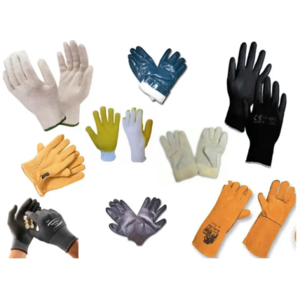LENTES DE SEGURIDAD
Debido a que es difícil que se determine o controle la dirección en que salen impulsados los pequeños trozos de metal procedentes del material que se está maquinando, todos los operarios de máquinas deben utilizar algún tipo de protección para la vista.
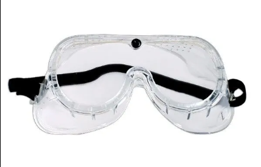PROTECCIÓN AUDITIVA
Para la selección de un elemento de protección auditiva es necesario identificar los riesgos, evaluar y caracterizar el ruido, así como también determinar las condiciones ambientales en el puesto de trabajo que puedan afectar la vida útil y el rendimiento del protector.
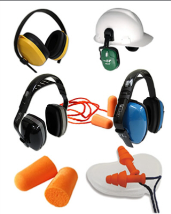CASCO
El principal objetivo del casco de seguridad es proteger la cabeza de quien lo usa de peligros y golpes mecánicos. También puede proteger frente a otros riesgos de naturaleza mecánica, térmica o eléctrica.
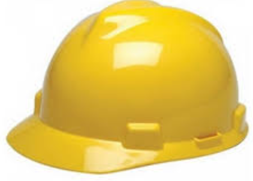BOTAS
El calzado de seguridad debe proteger al trabajador de cualquier objeto que pueda golpearlo o lesionarlo, al caer del área de trabajo, o por cualquier material que pueda ser expulsado como resultado del trabajo realizado, como chispas o esquirlas del algún metal.
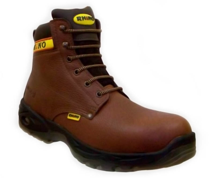SEÑALÉTICAS
La función de las señales es atraer la atención sobre lugares, objetos o situaciones que puedan provocar accidentes u originar riesgos a la salud, así como indicar la ubicación de dispositivos o equipos que tengan importancia desde el punto de vista de la seguridad. Dependiendo del tipo de señal (advertencia, prohibición etc.) se utilizará un tipo diferente de color para ubicarla más fácilmente.
SEÑALES DE PROHIBICIÓN
Las señales de prohibición tienen la forma de un círculo con el contorno rojo y una línea diagonal que lo cruza de lado a lado en un ángulo ascendente de 45° de derecha a izquierda, con el dibujo que represente la prohibición en el centro del círculo.

SEÑALES DE ADVERTENCIA
La forma de las señales de advertencia es un triángulo amarillo y alrededor debe tener una franja negra y en el centro debe llevar el símbolo que manifieste el tipo de advertencia.
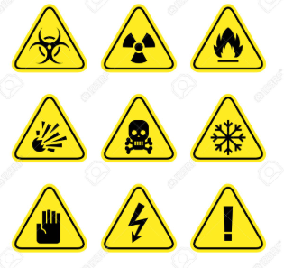SEÑALES DE OBLIGATORIEDAD
Las señales de obligatoriedad se reconocen por ser un círculo completamente azul, con el dibujo representativo de la obligación en el centro.
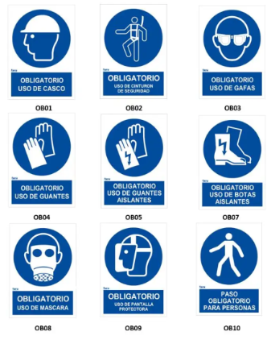SEÑALES INFORMATIVAS
Las señales informativas se indican por medio de un rectángulo de color verde, con la indicación dibujada en el medio, en color blanco. Estas señales se usan más para indicar lugares como salidas de emergencia, enfermerías etc. O hacia a donde se tiene que dirigir el trabajador.
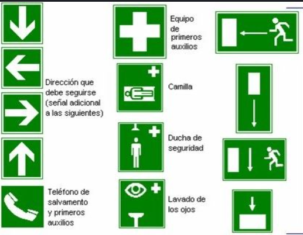Procedimiento Paso a Paso
Metodología para desarrollar la práctica:
-
1Selección de Giros: De acuerdo con el profesor, escoger 2 giros manufactureros (empresas o procesos) diferentes.
- Alimenticia
- Metal Mecánica
- Textil
- Farmacéutica
- Eléctrica
- Siderúrgica
- Química
- Tabacalera
- Automotriz
- Minera
- Metalúrgica
- Vidriera
- Cementera
-
2Diseño de Lista de Verificación: Diseñar un formato (Checklist) que contenga 50 condiciones de trabajo para evaluar (limpieza, orden, iluminación, seguridad, etc.).
-
3Evaluación: Realizar la evaluación de las 50 condiciones de trabajo en los dos procesos seleccionados. 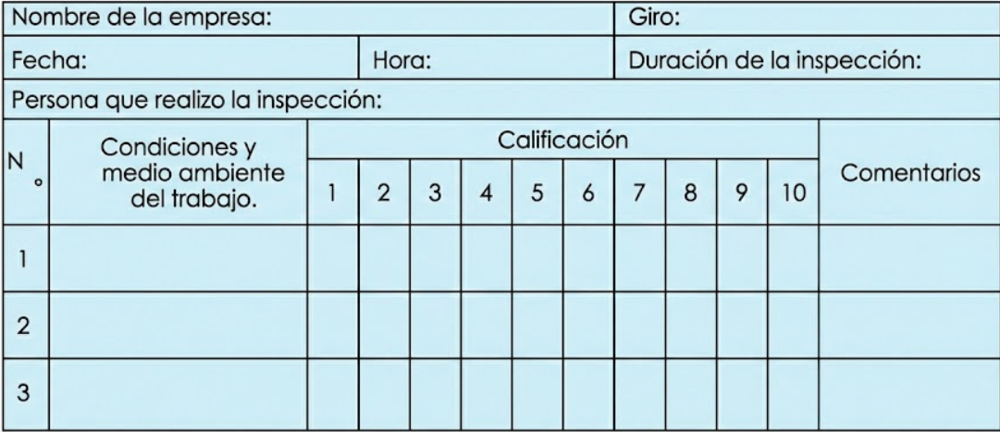
-
4Propuesta de Mejora: Hacer una propuesta de mejora para las condiciones evaluadas, sustentada en las Normas Oficiales Mexicanas (NOM) y bibliografía técnica.
Ejemplo de Formatos Solicitados
Contenido del Reporte
El reporte final de la Práctica 8 debe incluir obligatoriamente:
- Carátula, Objetivo y Tabla de Evaluación
- Dibujo, Reflexión y Acertijo
- Lista de Verificación de Condiciones de Trabajo (50 puntos, 2 empresas)
- Propuesta para mejorar las Condiciones de Trabajo (basada en NOMs)
- Descripción y operación de los Equipos de Medición
- Conclusiones y Bibliografía
🧠 Reflexión de Aprendizaje
La implementación de las 5'S y el monitoreo constante de las condiciones ambientales (ruido, luz, temperatura) no solo cumplen con la normativa legal, sino que son fundamentales para la productividad. Un ambiente seguro y ordenado reduce accidentes, minimiza el estrés laboral y mejora la calidad del producto final.
Práctica 9: Diseño y Estandarización de la Estación de Trabajo Ideal
Elemento Asociado: Integración de Ingeniería de Métodos, Ergonomía y Seguridad.
🎯 Objetivo
Diseñar un nuevo método que permita incrementar la productividad en el ensamble o fabricación del producto, aplicando todas las técnicas aprendidas durante el curso y además considerando:
- Al trabajador.
- El medio laboral.
- El material.
- El equipo de protección personal (EPP).
- La calidad.
- Dispositivos y herramientas necesarias para facilitar el desarrollo de las actividades.
Propuesta de la Estación Ideal
En la presente práctica se debe desarrollar físicamente la estación de trabajo para el ensamble de su pieza, considerando como mínimo la integración obligatoria de los siguientes elementos:

Elementos Físicos
- Equipo de protección personal (EPP).
- Diseño antropométrico (Dimensiones).
- Dispositivos (Fixtures/Ayudas).
- Código de colores.
- Señalética.
- Ambientación (Luz/Ruido).
Elementos Metodológicos
- Método mejorado.
- Estación de trabajo ideal.
- Hoja de instrucción de operación.
- Diagrama Bimanual Propuesto.
Desarrollo de los Elementos
1. EQUIPO DE PROTECCIÓN PERSONAL (EPP)
El personal debe encontrarse protegido contra cualquier tipo de accidente que pudiera suceder. Basándonos en la norma NOM-017-STPS-2009, se decidió que el personal debía contar como mínimo con:
- Bata de trabajo.
- Lentes de seguridad.
- Guantes de protección.
- Calzado de seguridad.
2. DISEÑO ANTROPOMÉTRICO
El puesto de trabajo debe diseñarse respetando las dimensiones y alcances del trabajador para evitar movimientos innecesarios y fatiga:
- Alcance Normal: Zona donde se realizan las operaciones principales con los codos flexionados.
- Alcance Máximo: Límite para colocar herramientas o materiales de uso ocasional (brazo extendido).
- Altura de la Mesa: Debe permitir una postura cómoda (sentado o de pie) acorde a la tarea visual y manual.
3. DISPOSITIVOS Y HERRAMIENTAS
Se deben implementar ayudas técnicas que faciliten el ensamble y reduzcan tiempos, cumpliendo con los principios de economía de movimientos:
- Colocación del Dispositivo (Fixture): Soporte fijo para liberar las manos de la tarea de "sostener".
- Alimentación por Gravedad: Contenedores inclinados o toboganes para entregar componentes (Pieza y Componentes) cerca del punto de uso.
- Drop Delivery (Deshacerse del producto): Mecanismo para dejar caer la pieza terminada sin necesidad de transportarla manualmente.
4. CÓDIGO DE COLORES Y SEÑALÉTICA
Para la organización visual y seguridad, se aplican los colores normativos (NOM-026) para delimitar:
| Elemento | Aplicación |
|---|---|
| Mesa de Trabajo | Delimitación del área operativa y zonas de materiales. |
| Mamparas | Separación visual de estaciones. |
| Pasillos | Marcaje de zonas de tránsito seguro. |
| Almacenes | Señalización clara de "Almacén de Materia Prima" y "Producto Terminado". |
Además, se debe incluir señalética obligatoria: Señales de uso de EPP, Señales de Prohibición, Ubicación de Botiquín y Extintor.

5. AMBIENTACIÓN
Control de las condiciones físicas para el confort del operario:
- Iluminación adecuada en el punto focal.
- Control de ruido.
- Ventilación suficiente.
Procedimiento de Desarrollo
-
1Análisis Previo: Identificar problemas en el método actual.
-
2Diseño: Planear la nueva distribución considerando antropometría y dispositivos.
-
3Implementación Física: Construir la estación con todos los elementos (mesa, fixtures, contenedores, señales).
-
4Evaluación: Verificar el cumplimiento de todos los puntos del Anexo 1.
ANEXO 1: Aspectos Mínimos a Evaluar
La estación de trabajo ideal debe cumplir estrictamente con los siguientes puntos:
Contenido del Reporte
El reporte final de la Práctica 9 debe incluir:
- Carátula, Objetivo y Tabla de Evaluación
- Dibujo, Reflexión y Acertijo
- Propuesta de la Estación de Trabajo Ideal (Justificación)
- Desarrollo de los elementos (Fotos y descripción de EPP, Dispositivos, Señales, etc.)
- Lista de verificación (Anexo 1) contestada
- Diagrama Bimanual Propuesto
- Hoja de Operación Estándar
- Conclusiones y Bibliografía